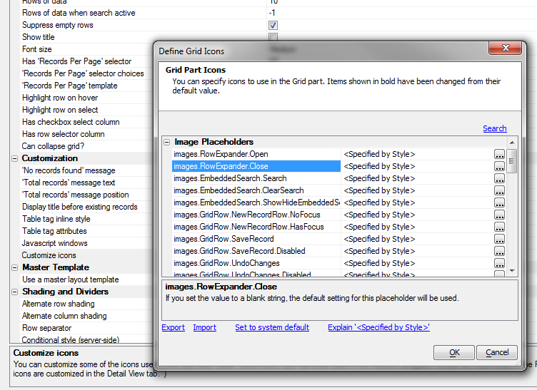

Grid - Search Part - Use Icons for 'Search' and 'Clear Search' buttons
New properties allow you to use icons instead of text for the 'Search' button and 'Clear Search' link. To customize the icon you can either define a mapping in the stylesheet editor (to affect a change across all components that use that style), or make a local change in Grid, Properties, Customization, Icons.